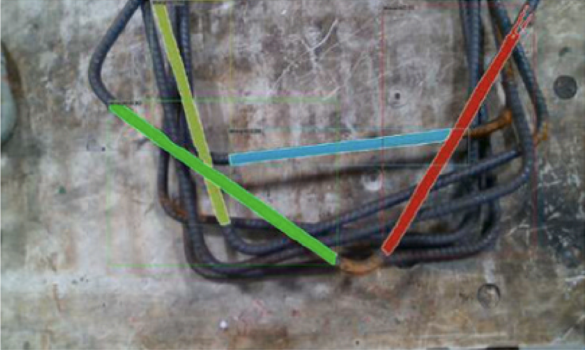
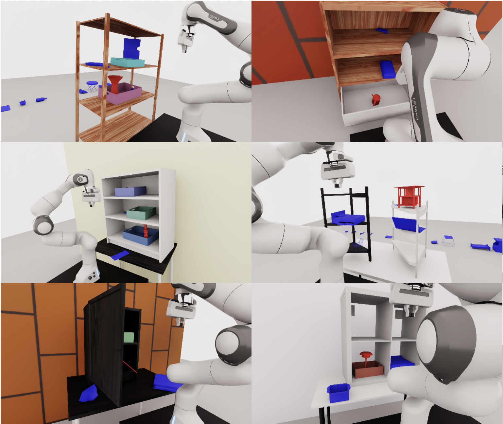

|
Beining Han I'm a Ph.D. candidate in Computer Science at Princeton University, advised by Prof. Jia Deng. Previously, I recieved B.Eng. in Yao Class at Tsinghua University in 2022. It was my pleasure to work with Prof. Chongjie Zhang, Prof. Jian Peng, Prof. Yuan Zhou, Prof. Jimmy Ba, Prof. Chelsea Finn during my undergrad. I am interning at NVIDIA Robotics Lab (Seattle) in Summer 2025. |
{kind=link}
ResearchI'm broadly interested in AI for robotics, especially for robot manipulation. |
|
|
Zero-shot Sim2Real Transfer for Magnet-Based Tactile Sensor on Insertion Tasks
Beining Han, Abhishek Joshi, Jia Deng arXiv, 2025 |
|

|
Rebar grasp detection using a synthetic model generator and domain randomization
Tao Sun, Beining Han, Szymon Rusinkiewicz, Yi Shao Automation in Construction, 2025 |
|

|
FetchBench: A Simulation Benchmark for Robot Fetching
Beining Han, Meenal Parakh, Derek Geng, Jack A Defay, Gan Luyang, Jia Deng The Conference On Robot Learning (CORL), 2024 |
|
|
Infinigen Indoors: Photorealistic Indoor Scenes using Procedural Generation
Alexander Raistrick, Lingjie Mei, Karhan Kayan, David Yan, Yiming Zuo, Beining Han, Hongyu Wen, Meenal Parakh, Stamatis Alexandropoulos, Lahav Lipson, Zeyu Ma, Jia Deng The IEEE/CVF Conference on Computer Vision and Pattern Recognition (CVPR), 2024 |

|
Infinite photorealistic worlds using procedural generation
Alexander Raistrick, Lahav Lipson, Zeyu Ma, Lingjie Mei, Mingzhe Wang, Yiming Zuo, Karhan Kayan, Hongyu Wen, Beining Han, Yihan Wang, Alejandro Newell, Hei Law, Ankit Goyal, Kaiyu Yang, Jia Deng The IEEE/CVF Conference on Computer Vision and Pattern Recognition (CVPR), 2023 |
|
Off-policy reinforcement learning with delayed rewards
Beining Han, Zhizhou Ren, Zuofan Wu, Yuan Zhou, Jian Peng Proceedings of the 39th International Conference on Machine Learning (ICML), 2022 |
|
|
Towards understanding cooperative multi-agent q-learning with value factorization
Jianhao Wang, Zhizhou Ren, Beining Han, Jianing Ye, Chongjie Zhang Advances in Neural Information Processing Systems 34 (NeurIPS) , 2021 |
|
|
Learning Domain Invariant Representations in Goal-conditioned Block MDPs
Beining Han, Chongyi Zheng, Harris Chan, Keiran Paster, Michael Zhang, Jimmy Ba Advances in Neural Information Processing Systems 34 (NeurIPS) , 2021 |
|
|
On the Estimation Bias in Double Q-Learning
Zhizhou Ren, Guangxiang Zhu, Hao Hu, Beining Han, Jianglun Chen, Chongjie Zhang Advances in Neural Information Processing Systems 34 (NeurIPS) , 2021 |
|
|
DOP: Off-Policy Multi-Agent Decomposed Policy Gradients
Beining Han, Yihan Wang, Tonghan Wang, Heng Dong, Chongjie Zhang International Conference on Learning Representations , 2020 |
|
Design and source code from Jon Barron. |